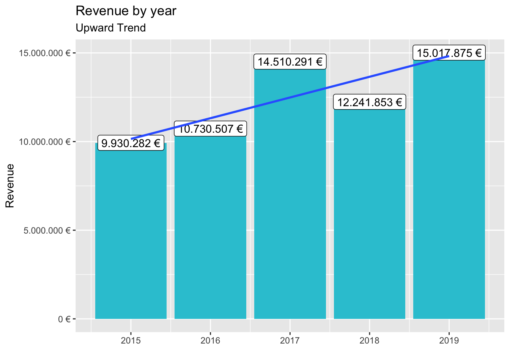

library(tidyverse)
library(readxl)bikes_tbl <- read_excel("~/Documents/GitHub/ws20-business-data-science-basics---lab-journal-ckz-dev/Raw_Data/Intro_to_tidyverse/bikes.xlsx")
bikeshops_tbl <- read_excel("~/Documents/GitHub/ws20-business-data-science-basics---lab-journal-ckz-dev/Raw_Data/Intro_to_tidyverse/bikeshops.xlsx")
orderlines_tbl <- read_excel("~/Documents/GitHub/ws20-business-data-science-basics---lab-journal-ckz-dev/Raw_Data/Intro_to_tidyverse/orderlines.xlsx")glimpse(bikes_tbl)## Rows: 231
## Columns: 9
## $ bike.id <dbl> 2875, 2873, 2874, 2876, 2877, 2225, 2091, 2086, 2088, …
## $ model <chr> "Aeroad CF SL Disc 8.0 Di2", "Aeroad CF SLX Disc 9.0 E…
## $ model.year <dbl> 2020, 2020, 2020, 2020, 2020, 2019, 2019, 2021, 2020, …
## $ frame.material <chr> "carbon", "carbon", "carbon", "carbon", "carbon", "car…
## $ weight <dbl> 7.60, 7.27, 7.10, 7.73, 7.83, 6.80, 6.80, 7.60, 7.30, …
## $ price <dbl> 4579, 6919, 6429, 5069, 3609, 6139, 5359, 2629, 3699, …
## $ category <chr> "Road - Race - Aeroad", "Road - Race - Aeroad", "Road …
## $ gender <chr> "unisex", "unisex", "unisex", "unisex", "unisex", "uni…
## $ url <chr> "https://www.canyon.com/en-de/road-bikes/race-bikes/ae…glimpse(bikeshops_tbl)## Rows: 30
## Columns: 5
## $ bikeshop.id <dbl> 1, 2, 3, 4, 5, 6, 7, 8, 9, 10, 11, 12, 13, 14, 15, 16, 17…
## $ name <chr> "Zum Goldenen Lenker", "AlexandeRad", "Fahrradladen 16", …
## $ location <chr> "Berlin, Berlin", "Hamburg, Hamburg", "Munich, Bavaria", …
## $ lat <dbl> 52.51667, 53.57532, 48.15000, 50.93333, 50.11552, 48.7823…
## $ lng <dbl> 13.400000, 10.015340, 11.583333, 6.950000, 8.684167, 9.18…glimpse(orderlines_tbl)## Rows: 15,644
## Columns: 7
## $ ...1 <chr> "1", "2", "3", "4", "5", "6", "7", "8", "9", "10", "11", …
## $ order.id <dbl> 1, 1, 2, 2, 3, 3, 3, 3, 3, 4, 5, 5, 5, 5, 6, 6, 6, 6, 7, …
## $ order.line <dbl> 1, 2, 1, 2, 1, 2, 3, 4, 5, 1, 1, 2, 3, 4, 1, 2, 3, 4, 1, …
## $ order.date <dttm> 2015-01-07, 2015-01-07, 2015-01-10, 2015-01-10, 2015-01-…
## $ customer.id <dbl> 2, 2, 10, 10, 6, 6, 6, 6, 6, 22, 8, 8, 8, 8, 16, 16, 16, …
## $ product.id <dbl> 2681, 2411, 2629, 2137, 2367, 1973, 2422, 2655, 2247, 240…
## $ quantity <dbl> 1, 1, 1, 1, 1, 1, 1, 1, 1, 1, 1, 2, 1, 1, 1, 1, 1, 1, 1, …bike_orderlines_joined_tbl <- orderlines_tbl %>%
left_join(bikes_tbl, by = c("product.id" = "bike.id")) %>%
left_join(bikeshops_tbl, by = c("customer.id" = "bikeshop.id"))bike_orderlines_wrangled_tbl <- bike_orderlines_joined_tbl %>% separate(col = category,
into = c("category.1", "category.2", "category.3"),
sep = " - ") %>%
# 5.2 Add the total price (price * quantity)
mutate(total.price = price * quantity) %>%
# 5.3 Reorganize
select(-...1, -gender) %>%
# 5.3.2 by pattern
select(-ends_with(".id")) %>%
# 5.3.3
bind_cols(bike_orderlines_joined_tbl %>% select(order.id)) %>%
#5.3.4 Reorder
select(order.id, contains("order"), contains("model"), contains("category"),
price, quantity, total.price,
everything()) %>%
#5.4 Rename
rename(bikeshop = name) %>%
set_names(names(.) %>% str_replace_all("\\.", "_"))library(lubridate)sales_by_year_tbl <- bike_orderlines_wrangled_tbl %>%
# Select columns
select(order_date, total_price) %>%
# Add year column
mutate(year = year(order_date)) %>%
# Grouping by year and summarizing sales
group_by(year) %>%
summarize(sales = sum(total_price)) %>%
# Optional: Add a column that turns the numbers into a currency format
# (makes it in the plot optically more appealing)
# mutate(sales_text = scales::dollar(sales)) <- Works for dollar values
mutate(sales_text = scales::dollar(sales, big.mark = ".",
decimal.mark = ",",
prefix = "",
suffix = " €"))
sales_by_year_tbl## # A tibble: 5 x 3
## year sales sales_text
## <dbl> <dbl> <chr>
## 1 2015 9930282 9.930.282 €
## 2 2016 10730507 10.730.507 €
## 3 2017 14510291 14.510.291 €
## 4 2018 12241853 12.241.853 €
## 5 2019 15017875 15.017.875 €sales_by_year_tbl %>%
# Setup canvas with the columns year (x-axis) and sales (y-axis)
ggplot(aes(x = year, y = sales)) +
# Geometries
geom_col(fill = "#2DC6D6") + # Use geom_col for a bar plot
geom_label(aes(label = sales_text)) + # Adding labels to the bars
geom_smooth(method = "lm", se = FALSE) + # Adding a trendline
# Formatting
# scale_y_continuous(labels = scales::dollar) + # Change the y-axis.
# Again, we have to adjust it for euro values
scale_y_continuous(labels = scales::dollar_format(big.mark = ".",
decimal.mark = ",",
prefix = "",
suffix = " €")) +
labs(
title = "Revenue by year",
subtitle = "Upward Trend",
x = "", # Override defaults for x and y
y = "Revenue"
)
sales_by_year_cat_1_tbl <- bike_orderlines_wrangled_tbl %>%
# Select columns and add a year
select(order_date, total_price, category_1) %>%
mutate(year = year(order_date)) %>%
# Group by and summarize year and main catgegory
group_by(year, category_1) %>%
summarise(sales = sum(total_price)) %>%
ungroup() %>%
# Format $ Text
mutate(sales_text = scales::dollar(sales, big.mark = ".",
decimal.mark = ",",
prefix = "",
suffix = " €"))
sales_by_year_cat_1_tbl ## # A tibble: 25 x 4
## year category_1 sales sales_text
## <dbl> <chr> <dbl> <chr>
## 1 2015 E-Bikes 1599048 1.599.048 €
## 2 2015 Gravel 663025 663.025 €
## 3 2015 Hybrid / City 502512 502.512 €
## 4 2015 Mountain 3254289 3.254.289 €
## 5 2015 Road 3911408 3.911.408 €
## 6 2016 E-Bikes 1916469 1.916.469 €
## 7 2016 Gravel 768794 768.794 €
## 8 2016 Hybrid / City 512346 512.346 €
## 9 2016 Mountain 3288733 3.288.733 €
## 10 2016 Road 4244165 4.244.165 €
## # … with 15 more rowssales_by_year_cat_1_tbl %>%
# Set up x, y, fill
ggplot(aes(x = year, y = sales, fill = category_1)) +
# Geometries
geom_col()+ # Run up to here to get a stacked bar plot
# Facet
facet_wrap(~ category_1)+
# Trendline
geom_smooth(method = "lm", se = FALSE) +
# Formatting
scale_y_continuous(labels = scales::dollar_format(big.mark = ".",
decimal.mark = ",",
prefix = "",
suffix = " €")) +
labs(
title = "Revenue by year and main category",
subtitle = "Each product category has an upward trend",
fill = "Main category" # Changes the legend name
)bike_orderlines_wrangled_tbl %>%
write_rds("~/Documents/GitHub/ws20-business-data-science-basics---lab-journal-ckz-dev/Manipulated_Data/Intro_to_tidyverse/bike_orderlines.rds")